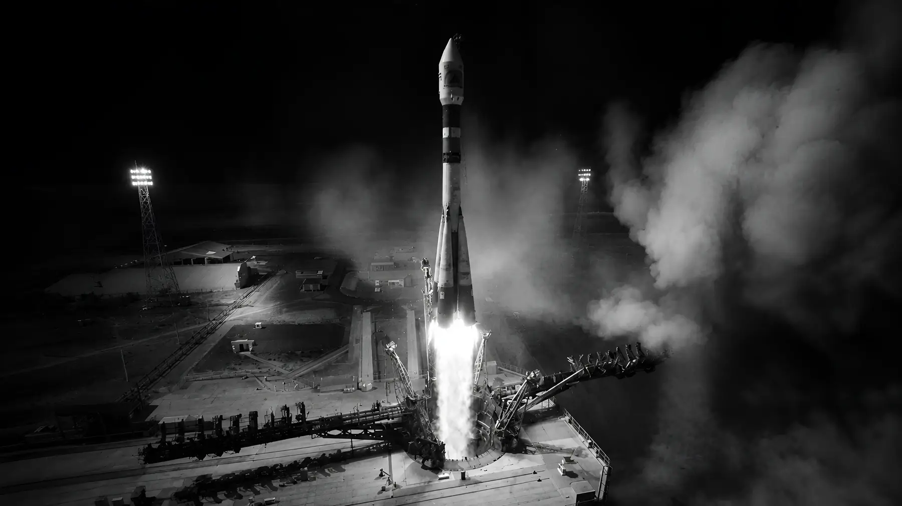
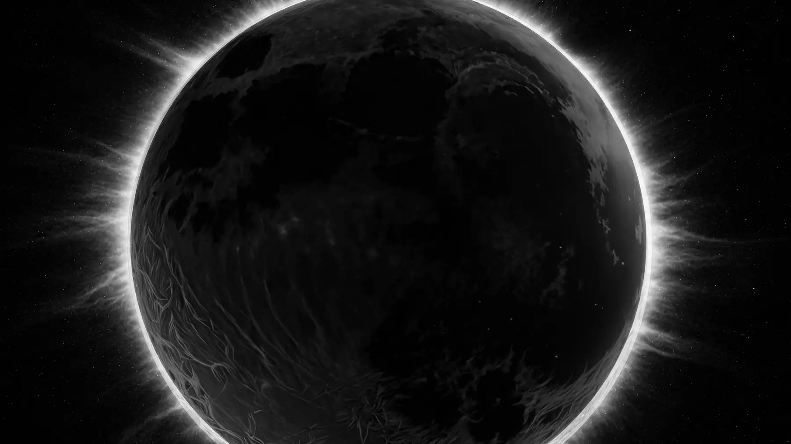
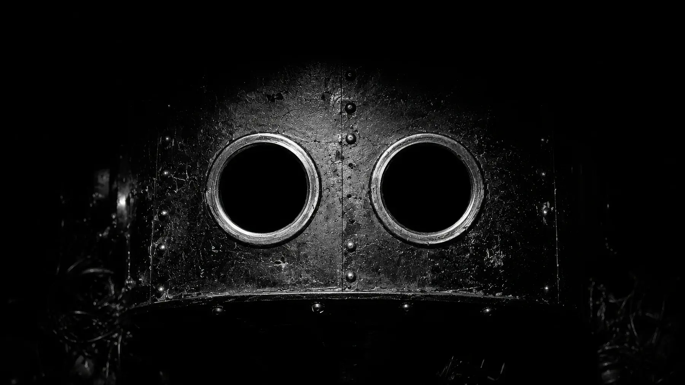
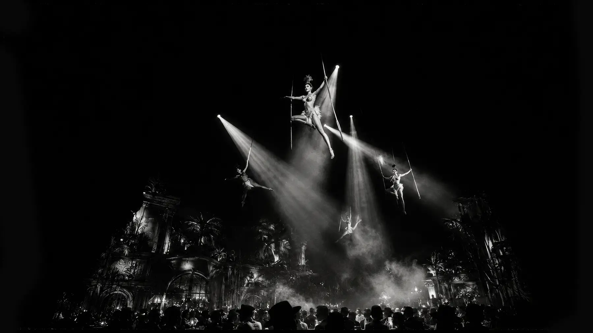
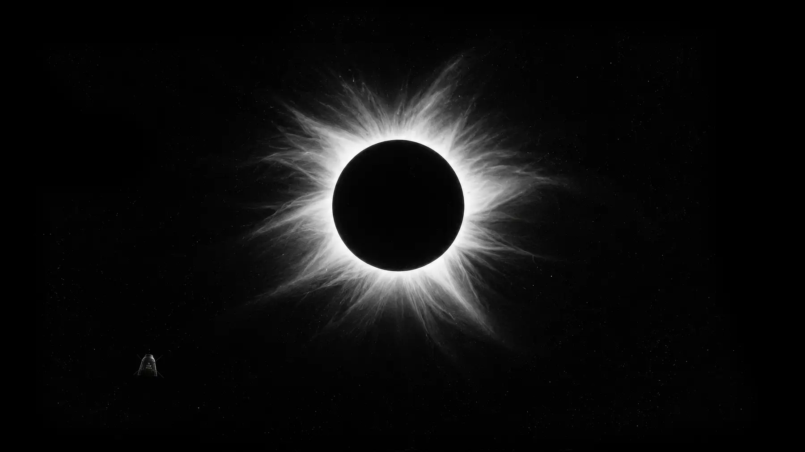
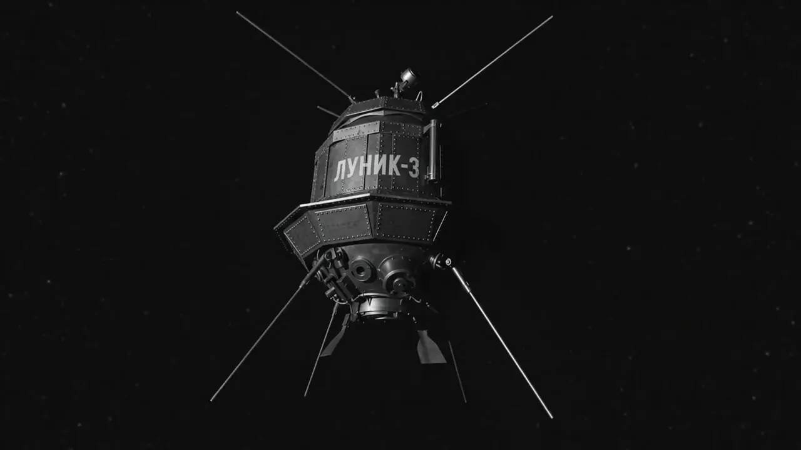

The Story
Three shots at the Moon, one travelling exhibition, and forty minutes alone with the evidence.
I · October 1959
American intelligence detects the launch of three Soviet vehicles — the heaviest objects ever put into space. In consecutive robotic missions to the Moon, the Lunik spacecraft missed it and fell into solar orbit; crashed into it; and transmitted photographs of its never-before-seen dark side.
Washington's own declassified account of the answer is a good deal messier than the one in the textbooks.
This is not the stirring tale of heroic deeds that is now a fat chapter in every US school history textbook.1/5

Ext. Kazakhstan / Baikonur Cosmodrome — Night
The launch. Built in miniature and shot against black — no faces, no likenesses, nothing to clear.
II · Operation Pocketed Rocket
The motives on both sides of the Iron Curtain were neither the altruistic advancement of science nor national pride. Whoever reached the Moon first would hold decisive tactical superiority in a bitter and frigid war.
The results of our failure will raise grave political questions and lower our prestige and influence.
So the Agency takes an interest when Moscow sends its exploits abroad in a travelling exhibition. Rumour says Sputnik and Lunik are in the crates. The tour is a perfect opportunity to look under the hood — except that nobody would ship the keystone of their advantage from country to country.
But the Soviets would never take the risk of transporting the keystone to their advantage from country to country. Or would they…?2/5


III · Mexico City
The exhibition books the Auditorio Nacional. Moscow means to show the world its science. Washington — convinced Lunik 3 may have left atomic missiles on the Moon — wants forty minutes alone with the probe. Both converge on the same hall.
Between them stands Emiliano Palacios, an upright young officer of the Motorised Mounted Police: arrested in a fire on Waterloo Street, then inexplicably promoted and handed the Soviet exhibition as his detail. His putative sisters are trapeze artists at Cabaret Tropicana. His new acquaintance, Paloma León, is the ungovernable daughter of an aspiring dictator.
3/5
Int. Tropicana — Night
The Flighty Sisters go up on wires. House lights down, four figures on cables, the room in silhouette below.
IV · The long night
Nothing about the operation stays clean. Two CIA counterintelligence officers — infallible, inseparable and insufferable — work the city. A general stages an uprising to unseat the president. Sicilians take the Tropicana's choreographer to Acapulco to settle accounts. There are indoctrination chambers, an escape, a Russian command post, and a barbershop quartet of four-star generals.
Everyone wants to photograph Lunik 3.
4/5

V · The heist
The Sisters go up on wires — a cat's-paw pass, an aerial dance over the exhibition floor. Paloma falls inside Lunik 3 and transmits the photographs. In Cheshire, Jodrell Bank receives them.
Paloma is arrested. The robbery runs on the railway: a junction, a water tower, a lumber yard, a dry lake bed outside the city. The probe changes hands on a clandestine runway at dawn.
It was Nikolayev's plan from the beginning. Hawaii. The end.
5/5- 001 EXT. KAZAKHSTAN / BAIKONUR COSMODROME — NIGHT
- 003 INT. ENGLAND / JODRELL-BANK ASTROPHYSICS STATION
- 009 INT. NATIONAL SECURITY COUNCIL
- 013 EXT. CHECKPOINT CHARLIE
- 022 EXT. MEXICO CITY'S MAIN SQUARE (ZÓCALO)
- 025 INT. TROPICANA
- 031 INT. CATHEDRAL
- 046 EXT. NATIONAL AUDITORIUM
- 062 EXT. TEMPLE OF THE PLUMED SERPENT
- 076 INT. ZERO GRAVITY ROOM
- 085 INT. TUNNEL
- 119 EXT. RACETRACK — DAY
- 122 INT. TROPICANA — NIGHT
- 140 INT. CATWALK — NIGHT
- 152 INT. JODRELL BANK RADIO ASTRONOMY LABORATORIES
- 164 EXT. DRY LAKE BED (TEXCOCO) — NIGHT
- 174 EXT. RAILROAD JUNCTION — CONTINUOUS
- 195 EXT. HAWAII / COCONUT STAND — MORNING
The Principals
- Emiliano Palacios
- Upright young officer of the Mexican Motorised Mounted Police.
- Paloma León
- Pretty motherless daughter of a genocidal Generalissimo.
- Generalísimo Aníbal León
- Aspiring dictator. Paloma's father.
- Leonid Nikolayev
- Commandant of the KGB's Latin American Directorate.
- Walker & Collins
- CIA — infallible, inseparable and insufferable counterintelligence officers.
- The Chief Designer
- Mastermind of the Soviet space programme.
- Sir Bernard Lovell
- Father of radioastronomy.
- The Flighty Sisters
- Rosa, Mimosa, Violeta & Orquídea — magnetic showgirls, main attraction of Cabaret Tropicana.
Roles as written. No casting is attached or implied.